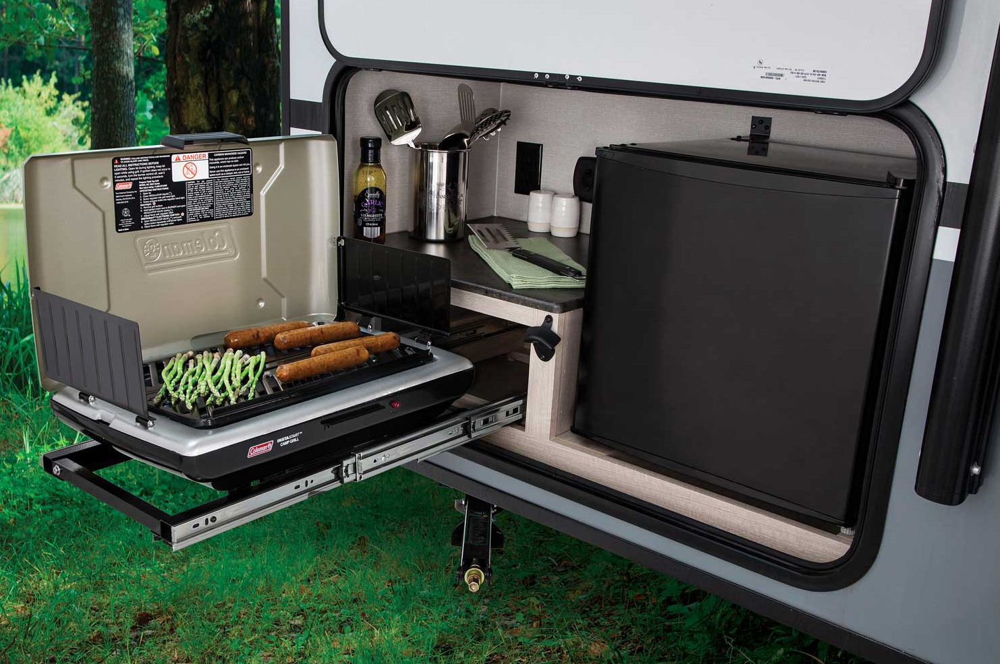
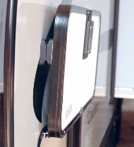

RV Outdoor Kitchens
Rvs with outdoor kitchens allow you to create the perform atmosphere for the family on the outside. An rv kitchen will allow you to cook simply and efficiently while being on the outside. An interior rv kitchen is usually smaller than a traditional kitchen, however an outdoor rv kitchen is often of a good size with the added bonus of space.. Outdoor rv kitchens are available in several differing types and sizes to suit your taste aesthetically and functionally.
Features of rv outdoor kitchens
Rv outdoor kitchen has many different features that will help you to enjoy outdoor living. Some outdoor rv kitchens have gas stoves that will allow you to cook and eat outdoors all day. The 2 burner outdoor rv kitchen stove is a perfect outdoor kitchen for campsite use and can also be portable. Gas outdoor kitchens are more efficient than wood burning outdoor kitchens which may become less convenient in colder climates.
Yes it is great when you can buy a completely fitted outdoor kitchen in one easy purchase. But even if you already have a gas hob and cooker hood then it is still possible to build a stylish and useful portable outdoor rv kitchen that will make your campsite stay more pleasurable. You just need to make everything portable.
Tips for using your rv outdoor kitchen
There are some tips you need to follow when you are preparing to use your rv kitchen. Some of them are very basic and some of them you may not even think about, but they can make your life easier.
- Keep it simple
- Be Versatile Never let yourself be dependent on any single cooking method. For example, if your rv gas range is having issues and you cannot get it repaired, there should be a way for you to prepare your food in another manner. Always have at least one backup plan in place before committing yourself to any specific appliance or tool.
- Generality is Key
- Keep lots of storage containers
- Countertop Choice 
- Portable Kitchen sink
- Ventilation
- Portable water
An rv kitchen does not need to be obnoxious. A simple setup will work wonders. You don't need all the fancy equipment to make your outdoor kitchen look good and function well. If you are only cooking for two or three people, then you don't need a huge rv gas grill. Buy something that is just big enough to serve the number of people you usually cook for. That way it won't be in your way when you are done entertaining guests.
You will find that the more versatile you get is the more your rv gas grill will be able to do for you. When you first start out with your outdoor kitchen, make sure that you plan ahead so that each appliance has the potential to serve more than one function. For example if you intend to have a hot plate in your outdoor kitchen, think about whether it could also serve as a griddle or for some other purpose. This eliminates the need for purchasing extra items and can save you money.
The fact remains however that if you want to follow proper safety precautions then a gas range should be used for your outdoor kitchen. It is the only appliance designed specifically for outdoor use, so while it may not be as efficient as many of its indoor counterparts it will provide the greatest level of safety in all forms of outdoor activities.
Being outdoors with all different types of spices and ingredients means that you need lots of different storage containers. Also, these containers should be easy to clean and transport so that you can access them easily when cooking.
Choosing the right type of countertop is vital for your outdoor kitchen. You will need at least one surface which you can put hot items onto without fear of damaging it as well as not have everything you put on it slide off. The countertop should also be easy to clean as well as durable.
It is a good idea to have an outdoor sink if you plan to do any serious cooking in your outdoor kitchen, this is simply because you will not have space for a full-sized kitchen sink like inside the rv but can use one outdoors. This kitchen sink could also be in the form of broad containers that have water in them. It doesn't necessarily have to be a full-blown kitchen sink.
When you have your kitchen on the outside, you have to take care of the ventilation. You can do this by putting in a vent on one wall and another at the far end of your kitchen. If you happen to have two solid walls then you will need to put it for sure above your head in order to avoid carbon monoxide poisoning.
A source of portable water should be your main concern. You should have one a good source of water in your rv at all times. If you use this water to wash the dishes or prepare your food, it should be boiled before using it. This is important because you have no way of knowing if the pipes used to carry water into the rv are clean.
Can you add an outdoor kitchen to an RV?
Yes, you can add an outdoor kitchen to an rv. You can have it done at the factory where they can include it in your package. Some rvs have both interior and exterior kitchens at the same time.Types of rv outdoor kitchens
There are a few different types of rv kitchens. There is the folding-out kitchen that folds up for storage. This is a good option if you do not have a lot of space and want to save the amount of space as possible. Then there are always options like indoor kitchens. Below i will go over these in more details.
- Fold-out Kitchen
- Entertainment Center Type
This kitchen is very simple and easy to set up. It is usually made out of metal and wood, but can be other materials too. When you are not using it, it folds into a wall or door. If that option isn't available, the kitchen can fold up and underneath something else. These types of rv outdoor kitchens have all you need to make food while on the go.
This is the type of outdoor kitchen that comes with all the bells and whistles. This type is usually set up by a professional and can be very expensive. It has the double sinks with running water, a stove top, and storage for food. The entertainment center type also includes an oven that is separated from the rest of the kitchen so it doesn't heat up everything else while it's on. These kitchens usuall y have a large tv to entertain while you cook. This type also has a nice table, the perfect place to sit and enjoy your meal or if you have guests coming over, they can eat at the table.
Conclusion
You will enjoy your time outdoors a lot more if you have an outdoor kitchen as it will allow you to cook the food outdoors without having to worry about the smoke that comes from cooking indoors. Choosing what is right for your needs will not be hard once you do some research about outdoor kitchens and see what they come with.